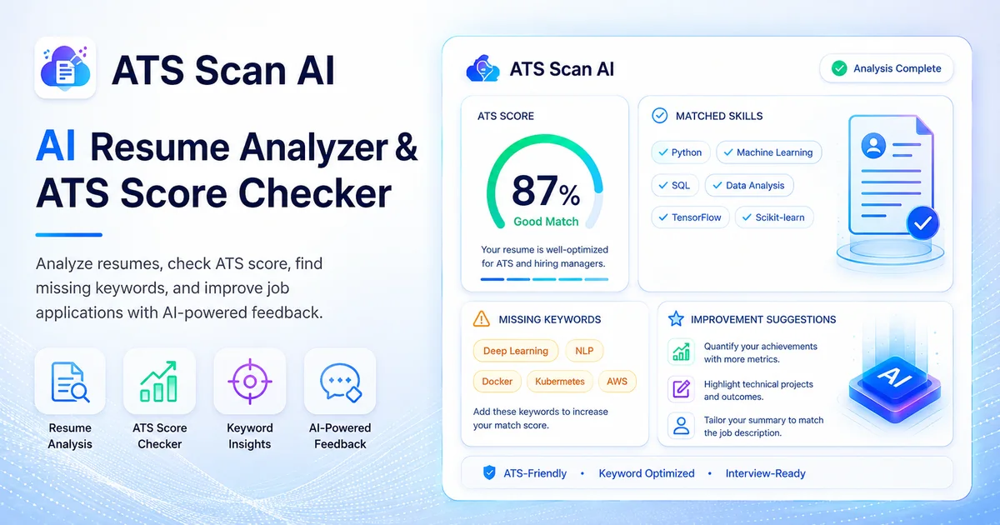

ATS score
Get a clear score that helps you compare the resume with the selected role or job description.
AI-assisted resume optimization
Check how well your resume matches a role, identify missing skills and keywords, discover formatting issues, and receive practical suggestions before you apply.

What the analysis covers
ATS Scan AI combines role alignment, skills, keywords, formatting, and improvement guidance in one report.
Get a clear score that helps you compare the resume with the selected role or job description.
See which skills are already represented and which relevant capabilities may be missing.
Identify role-specific terms that can improve relevance when they accurately reflect your experience.
Find layout or structure issues that may make a resume harder for automated systems to interpret.
Review how clearly the resume presents experience and education for the intended opportunity.
Receive suggestions, stronger bullet-point ideas, and a final recommendation to guide revisions.
Simple workflow
Use a job description, a predefined role, or your own job title to make the analysis more relevant.
View the complete process →Select a PDF, DOCX, or TXT file up to 5 MB.
Paste the job description, choose a job role, or enter a custom role.
Read the report, download it, revise your resume, and compare later scans.
Understand the result
Applicant tracking systems differ between employers. ATS Scan AI is designed to help you find gaps and compare revisions; it cannot predict a recruiter’s decision or guarantee an interview.
Learn about ATS resume checking →Credit-based access
One credit is used for one resume analysis. Current packages and the final checkout amount are displayed inside the ATS Scan AI application.
View pricing details →Common questions
ATS Scan AI accepts PDF, DOCX, and TXT files. The maximum upload size is 5 MB.
No. You can paste a job description, select an available job role, or enter a custom job title. A detailed job description usually provides more context.
No. The score is an AI-assisted guidance tool. Employer systems, recruiters, experience, competition, and hiring criteria all affect outcomes.
Yes. The application keeps recent scan history and can compare newer results with previous scans.
Use the main application at atsscanai.com. This site provides product information, guidance, and policies.
Ready to improve your resume?